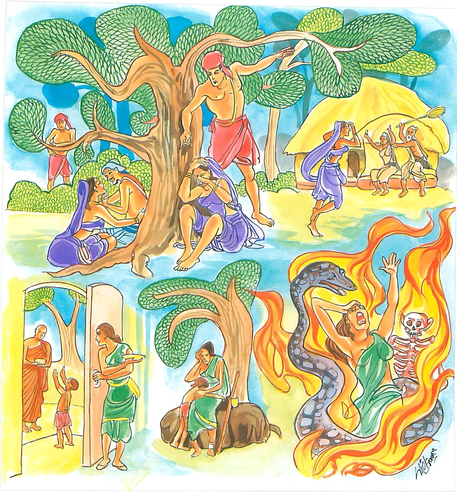
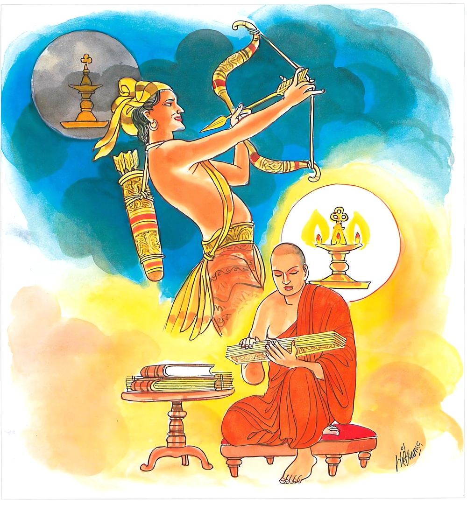

18-5 සොරසැමියන් සොයා ගිය ගැහැණි
මෙම කතාව ධම්මපද අටුවාවෙන් ද කියවන්න.
මලිත්ථියා දුච්චරිතං මච්ඡෙරං දදතො මලං
මලා වෙ පාපකා ධම්මා අස්මිං ලොකෙ පරම්හි ච.
ස්ත්රියට දුශ්චරිතය (ධූර්තවීම) මලයෙක (කිලිටෙක). දන් දෙන්නාහට මසුරුබව මලයෙක (කිලිටෙක). අකුශල ධර්මයෝ මේ ලොව ද පර ලොව ද ඒකාන්තයෙන් මලයෝ ය (කිලුටු ය)

තතො මලා මලතරං අවිජ්ජා පරමං මලං
එතං මලං පහත්වාන නිම්මලා හොථ භික්ඛවො.
මහණෙනි, ඒ සියලු මලයට වඩා අධිකතර මලයක් තොපට දක්වමි. (දුඃඛාදි අට තැන පැවැති නො දැන්මැ යි කියන ලද) අවිද්යාව මහත් ම මලය ය (කිලුට ය). මේ අවිද්යා නැමැති මලය (රහත් මග නුවණින්) පහකොට නිර්මල වවු.

බුදුරජානන් වහන්සේ වෙළුවන මහාවිහාරයෙහි වැඩ වසන එක් සමයෙක්හි එහි එක් කුලපුත්රයක්හට සමානජාති ඇති එක් කුලකුමරියක සරණ කොට ගෙණ ආහ. ඕ වෙසඟනක් වූ ය. ගෙණ ආ දා සිට කිසිත් විළිබියක් නැති ව සොර සැමියන් කරා යන්නී ය. ඇයගේ ස්වාමිපුත්ර වූ ඒ කුලපුත්ර තෙමේ තම බිරිය සොර සැමියන් කරා යෑමෙන් හටගත් ලජ්ජා ඇතියේ කිසිවකුගේ ඉදිරියට යන්නට නො හැකි ව බුද්ධොපස්ථානයට යෑම පවා හැර දමා ගෙයි හිඳ කිහිප දවසක් ගතවූවාට පසු බුදුරජුන් වෙත එළැඹැ වැඳ පසෙකට වී හුන්නේ ය. බුදුරජානන් වහන්සේ “කිම, උපාසක! ටික දවසක් මෙහි නො ආවහු?”යි අසා වදාළ කල්හි “ස්වාමීනි! මාගේ බිරිය ගෙට ආදා සිටම සොර සැමියන් කරා යන්නී ය, එයින් ලජ්ජාවට පත් මම කිසිවකුගේ ඉදිරියට යන්නට නො හැකි ව ගෙයි ම හුන්නෙමි”යි කී ය. “උපාසක! පෙරත් මා, බෝසත් අවදියෙහි මෙබන්දක් නිසා මා වෙත පැමිණි තමුසේට, ගෑණු, උස් පහත් දිළිඳු නොදිළිඳු හැඩ වැඩ ඇති නැති කවුරුත් දිය නාන පැන්තොට ආදියට සමානයහ, එහෙයින් ගෑණුන් කෙරෙහි විශ්වාසය නො තැබිය යුතු ය, එසේම ඈලා කෙරෙහි නො කිපිය යුතු ය යි තමුසේට කියන ලද්දේ ය, තමුසේ භවයෙන් වැසී ගිය එය නො සලකා තැවෙන්නහු ය”යි වදාළ කල්හි “ඒ ඉකුත් පුවත වදාරණු මැනැවැ”යි ඔහු විසින් ආරාධිත වූ බුදුරජානන් වහන්සේ:
“ගඟ මග අවන්හල - ගිමන්හල පැන් බොන තැන්,
උස් පහත් හැම දෙනහට - පොදු වේ ද යම්සේ ලොව.
.
එමෙන් මේ ගෑණුත් - උස් පහත් හැම දෙනහට,
පොදු වෙත් එයින් උන්හට - කුලහසරඉම් නැත්තේ”
යි මෙසේ එ පුවත විස්තර කොට “ගෑණුන්ට පරපුරුෂයන් කරා යෑමත් දන් දෙන්නහුට මසුරු කමත් එලොව මෙලොව දෙක්හි සත්ත්වයන් විසින් කරණු ලබන පව්කමුත් උන් උන් නසාලන අරුතින් මල ය, අවිද්යාව වනාහි ඒ හැම මලයක් හැම කිලුටක් අබිබවා සිටුනා බැවින් බලගතු මලය”යි වදාරා මේ ධර්මදේශනාව කළ සේක.
මලිත්ථියා දුච්චරිතං මච්ඡෙරං දදතො මලං,
මලා චෙ පාපකා ධම්මා අස්මිං ලොකෙ පරම්හි ච.
.
තතො මලා මලතරං අවිජ්ජා පරමං මලං,
එතං මලං පහාත්වාන [1] නිම්මලා හොථ භික්ඛවොති.
ස්ත්රියට දුශ්චරිතය මලයෙක් වේ. දන් දෙන්නහුට මසුරු බව මලයෙක් වේ. අකුශල ධර්මයෝ මෙලොව ද පරලොව ද එකාන්ත යෙන් මලයෝ ය.
මහණෙනි! ඒ හැම මලයට වඩා අධිකතර මලයක් තමුසේලාට කියමි. අවිද්යාව මහත්ම මලය යි. මේ අවිද්යා මලය පහ කොට මලරහිත වවු.
මලං ඉත්ථියා දුච්චරිතං = ස්ත්රියට දුශ්චරිතය මලයෙකි. කිලුටෙකි.
මල නම් කිමැයි යට කියන ලද්දේ ය. ඉත්ථි නම්: පුරුෂයන් පතන්නී ය. පුරුෂයන් විසින් පතනු ලබන්නී හෝ ය. පරකිය ග්රන්ථයන්හි ස්ත්රීහු, පද්මිනී - තිත්රී - ශංඛිනී - හස්තිනී කොටස් සතරකට බෙදා දක්වන ලදහ. එහි ම මෑලාගේ ලක්ෂණ ද කියා ඇත්තේ ය. ඒ එයින් දතයුතු ය.
දුච්චරිත නම්: මෙහි ස්ත්රීන් විසින් සොර සැමියන් සෙවීම ය. සොර සැමියන් සේවනය කරන්නී නියම හිමියා විසින් බැහැර ලන්නී ය. හෙතෙමේ ඇයට වධ හිංසා පමුණු වන්නේ ය. තළන්නේ ය. කොටන්නේ ය. බණින්නේ ය. මවුපියෝ ද “තී අපගේ කුලය කෙලසන්නී ය, තී ඇසින් දැක්ම ද අපට නො ද රුස්නේ ය”යි ගෙයින් පන්නා හරින්නෝ ය. එයින් ඕතොමෝ අනාථ ව හැසිරෙන්නී මහත් දුකට වැටෙන්නී ය. මේ මෙය කියූ සැටි:- “අතිචාරිනිං පි ඉත්ථිං සාමිකොපි ගෙහා නීහරති. මාතාපිතුන්තං සන්තිකං ගතම්පි ත්වං කුලස්ස අඞ්ගාරභූතා අක්ඛීහිපි න දට්ඨුං පිහෙමාති තං නීහරති, සා අනාථා විචරන්තී මහාදුක්ඛං පාපුණාති” යනු. මේ මෙලොව දී ලැබෙන ස්වල්ප මාත්ර විපාකයෙකි. පරලොව අපායයෙහි උපදින්නී ය. ස්ත්රියට පරපුරුෂ සේවනය මලයෙකැ යි වදාළෝ මෙලොව පරලොව දෙක්හි ම මේ හේතුවෙන් දුකට වැටෙන බැවිනි. පුරුෂයිනට ද පරස්ත්රී සේවනය මලැ යි දතයුතු ය.
මච්ඡෙරං දදතො මලං = දන් දෙන්නහුට මසුරුබව මලයෙකි.
“දන් දෙමි”යි සිතන්නහුට යම් ලෙසකින් මසුරු බවෙක් සිතෙහි උපන්නේ නම් ඒ මසුරු සිත, දෙමි යි නැගී ආ සිත යටපත් කරන්නේ ය. එහෙයින් ඔහු පිණෙන් පිරිහෙන්නේ ය. එකල ඔහු එලොව මෙලොව දෙක්හිම හැම සැපතින් පිරිහෙනු එකාන්ත ය. “ඛෙත්තකසනකාලෙ ඉමස්මිං බෙත්තෙ සම්පන්නෙ සලාකභත්තාදීනි දස්සාමිති චින්නෙත්වා නිප්ඵන්නෙ සස්සෙ මච්ජෙරං උප්පජ්ජිත්වා චාගවිත්තං නිවාරෙති, සො මච්ඡෙරවසෙන චාගවිත්තෙ අවිරූහන්නෙ මනුස්සසම්පත්තිං දිබ්බ සම්පත්තිං නිබ්බානසම්පත්තින්ති තිස්සො සම්පත්තියො න ලභති” යනු අර්ත්ථකථා ය. එහෙයින් දන් දෙන්හුට මසුරු බව මලයෙක් වේ. [2]
මාලා වෙ පාපකා ධම්මා = අකුශල ධර්මයෝ එකාන්තයෙන් මලයෝ ය.
අස්මිං ලොකෙ පරම්හි ච = මෙලොවෙහි ද පරලොවෙහි ද.
මෙලොව පරලොව දෙක්හි අකුශලධර්මයෝ අකුසල් කරන්නහු දෙලොවෙහි ම හැම සැපතින් පිරිහෙලන බැවින් එකාන්තයෙන් මලයෝ වෙත්.
තතො මලා මලතරං = ඒ හැම මලයට වඩා දැඩිමලයක් (කියමි)
අවිජ්ජා පරමං මලං = අවිද්යාව මහත් මලය වේ.
එතං මලං පහාත්වාන නිම්මලා හොථ භික්ඛවො = මහණෙනි! මේ මලය පහ කොට මලරහිතයෝ වවු.
මහණෙනි! මේ හැම මලයට හැම කිලුටට වඩා ඉතා දැඩි මලය මම තමුසේලාට කියන්නෙමි. අවිද්යාව එහිලා දැඩි මලය යි දත යුතු ය. මේ මලය හැම කෙලෙස් මලයනට මුල් ව සිටියේ ය. එහෙයිනි මෙය හැම මලයක් යට කොට සිටුනා දැඩි මලය වනුයේ. මෙය සසර දිග් ගැසීමෙහි මුල හේතු ය. මහණෙනි! සසර දුක් නැසීමට මේ අවිද්යා මලය නැසිය යුතු ය. එය නැසිය යුත්තේ රහත්මග නුවණින් ය. ඒ නුවණින් මෙය පහ කොට නසා හැර මලරහිතයන් වීම තමුසේලාගේ පරම යුතුකම ය.
අවිජ්ජා නම්: සිවුසස් දම් වසාලන බලවත් මෝහය යි. පුරන්නට නො සුදුසු බැවින් කාය දුශ්චරිතාදිය අවින්දිය නම්. නො පිරිය යුතු නො විඳිය යුතු කායදුශ්චරිතාදිය විඳුනා බැවින්, විඳිය යුතු පිරිය යුතු කායසුචරිතාදිය නො විඳුනා බැවින්, සක්න්ධයන්ගේ සමූහ භාවය ආයතනයන්ගේ ආයතනභාවය ධාතූන්ගේ ධුව - සුඛ - සුභාදිශුන්යභාවය ඉන්ද්රියයන්ගේ අධිපතිභාවය සත්යයන්ගේ තථාභාවය නො දන්නා බැවින්, දුඃඛසමුදයාදීන්ගේ පීඩනාදී අර්ත්ථ නො දන්නා බැවින්, සසර, යෝනි - ගති - භව - විඤ්ඤාණට්ඨිති - සත්තාවාසයන්හි සත්ත්වයන් දුවවන බැවින් අවිද්යමාන වූ ස්ත්රී - පුරුෂාදී සම්මුති ධර්මයන්හි දුවවන බැවින්, විද්යමාන වූ ස්කන්ධාදීන්හි නො පවත්නා බැවින් චක්ඛුවිඤ්ඤාණාදීන්ගේ චක්ඛුප්පසාදාදිවත්ථු හා රූපාදි ආරම්මණ ද අවිජ්ජාදී පටිච්චසමුප්පාද ධර්ම හා සඞ්ඛාරාදිපටිච්චසමුප්පන්න ධර්මයන්ගේ ද ඒ ඒ ස්වභාවයන් මුවහ කරණ බැවින් ඒ බලවත් මෝහය අවිජ්ජා නම් වේ. මේ වනාහි ව්යඤ්ජනාර්ත්ථ විසින් හා ස්වභාවාර්ත්ථ විසින් අවිජ්ජා යනු තේරූ සැටියි. [3]
ධර්මදේශනාවගේ අවසානයෙහි බොහෝ දෙන සෝවන්ඵලාදියට පැමිණියාහු ය.
අන්යතර කුලපුත්ර වස්තුව නිමි.